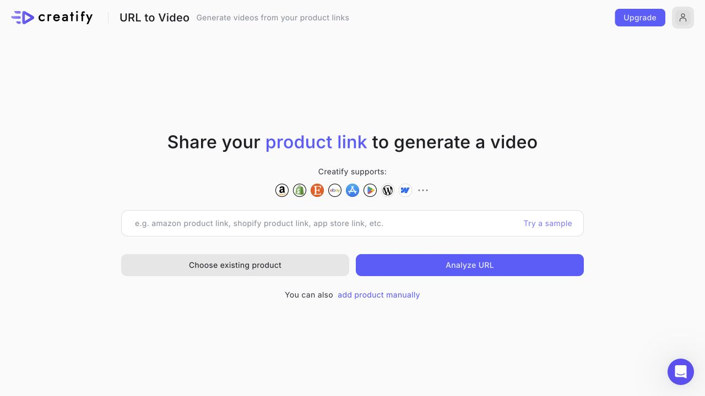
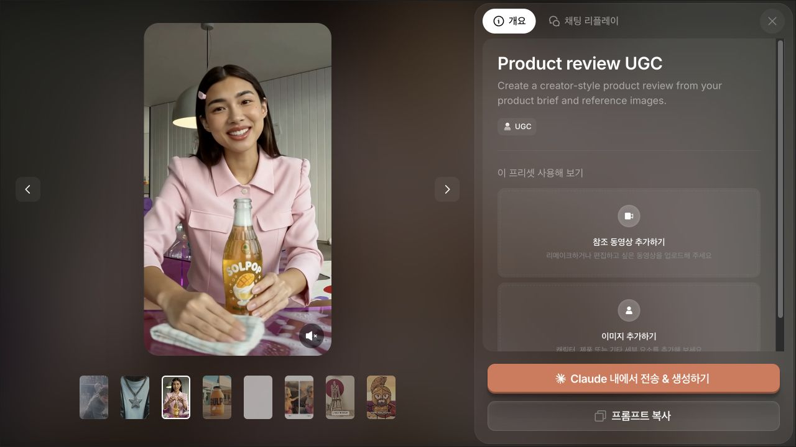
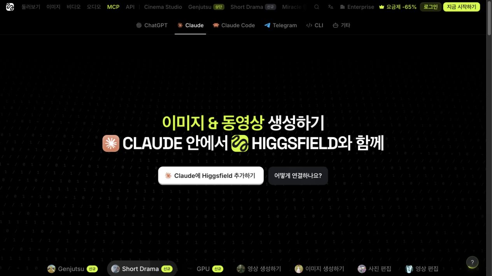
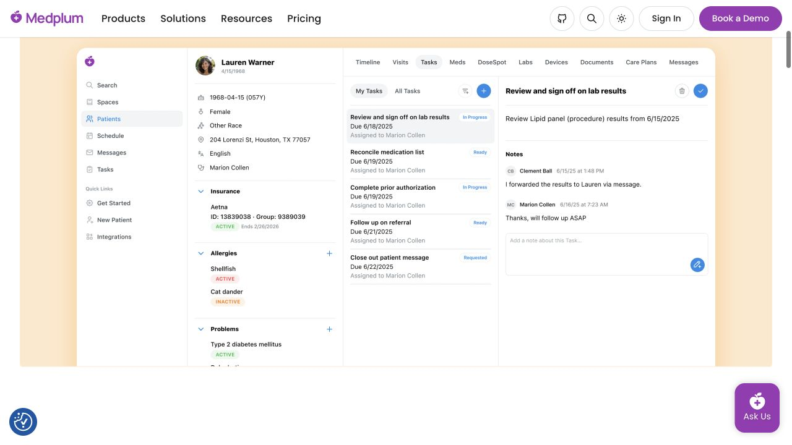
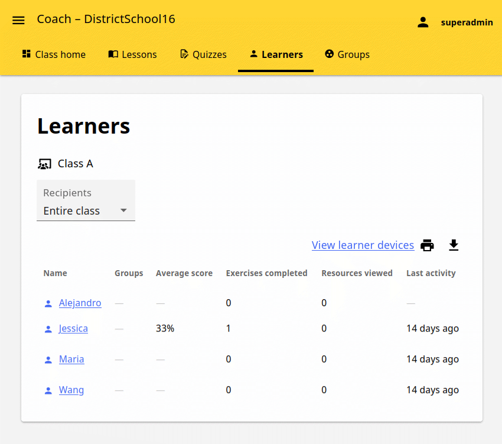

고객이 다시 찾는 AI 서비스
MVP 이후의 UI·UX, 하네스, 수익 구조
상품 사진 한 장에서
고객이 믿고 쓰는 서비스까지.
무신사 Core AI PM
구름 해커톤 특강
차성재
AI Engineer 출신 AI PM
무신사 Core AI PM
Agent Chat, GEO,
모두의AI 서비스 담당
아주대 AI대학원 겸임교수
MLOps & LLMOps
서울시립대 스마트시티대학원 강사
전 겸임교수 / DataAnalysis & ML
금융·의료·교육·이커머스 산업에서 일해 왔습니다.
Contents
문제 정의에서 출시 판단까지, 하나의 서비스로 연결합니다
JD를 제품의 기준으로 바꾸기
원하는 도메인의 채용공고에서, 내가 증명할 역량을 찾습니다
| Shopify PM 공고에서 확인한 요구 | 이 사례에서 만들 증거 |
|---|---|
| 셀러를 직접 만나 문제 이해 | 인터뷰 메모 → 반복되는 콘텐츠 수정 업무 |
| AI로 빠르게 프로토타입 제작 | 입력부터 검수까지 이어지는 사용 가능한 화면 |
| 직접 온보딩하며 제품 사용 | 새 계정·빈 데이터·실패 상황의 테스트 기록 |
| 데이터와 셀러 의견으로 판단 | 완료율·재작업·성공 한 건 비용의 전후 비교 |
왼쪽은 공식 JD의 요약, 오른쪽은 강연자의 포트폴리오 설계 제안입니다. 채용 요건·공고 상태는 지원 시 다시 확인하세요.
셀러의 일은 게시까지 이어집니다
기능 목록보다, 고객이 오늘 마쳐야 하는 일을 먼저 적습니다
“사진은 있는데,
오늘 올릴 광고는 아직 없어요.”
고객 상황
작은 브랜드의 운영자. 촬영·상세페이지·CS를 함께 맡습니다.
막히는 지점
상품 설명을 줄이고, 형식을 바꾸고, 틀린 표현을 다시 고칩니다.
완료의 기준
상품 사실을 확인한 초안을 저장하고, 게시할 파일을 가져갑니다.
강연용 고객 가설입니다. 실제 인터뷰 인용이 아니며, 인터뷰에서 빈도와 지불 의사를 검증해야 합니다.
작게 시작하되 끝까지 연결하기
Seller Studio / 소규모 커머스 팀을 위한 콘텐츠 제작 서비스
첫 고객
주 2회 이상 상품 콘텐츠를 만드는 1~3인 브랜드 팀.
첫 작업
상품 사진과 사실을 입력하고 세로 광고 초안을 검수·저장합니다.
첫 유료 가치
브랜드 표현을 다시 쓰고, 팀이 검수한 결과를 다음 작업에 재사용합니다.
이번 범위
카피 → 영상 요청 → 검수 → 다운로드. 광고 자동 집행은 후속 단계입니다.
가설: 다시 고치는 시간을 줄이면, 다음 상품에도 쓸 이유가 생깁니다.
한 번의 작업을 여섯 단계로 나누기
중간에 나가도, 다시 들어와도, 같은 작업이 이어져야 합니다
- 상품 등록사진·사실 입력
- 카피 검수근거와 표현 확인
- 비용 확인잔액·한도 확인
- 영상 제작작업 번호 발급
- 결과 검수색·문구·형식 확인
- 저장·다운로드다음 작업에 재사용
고객에게 보이는 것
현재 상태, 저장 여부, 비용, 다음 행동.
서비스가 기억할 것
workspace_id, job_id, 요청 내용, 공급사 request_id, 사용량 원장.
교육용 설계. 과금 정책은 “생성 성공 시 사용량 확정”으로 가정하며 실행 전에 화면에 표시합니다.
글로벌 서비스에서 가져올 동작
Creatify와 Higgsfield의 공개 화면을 직접 관찰했습니다

입력 부담을 줄이는 Creatify
상품 URL, 샘플, 수동 입력을 같은 시작점에서 제공합니다.

참조와 결과를 함께 보여주는 Higgsfield
레퍼런스 자료와 제작 흐름을 연결합니다.
이미지는 각 서비스의 실제 공개 화면입니다. 생성 실행이나 성과 검증을 했다는 의미는 아닙니다.
REA로 관찰을 명세로 바꾸기
화면을 따라 그리기 전에 상태, 경계, 복구 규칙을 정리합니다
| 구분 | 기록 예시 | 우리 서비스의 결정 |
|---|---|---|
| 관찰 | Creatify에 샘플·수동 입력 경로가 보임 | 첫 방문에 샘플 상품으로 시작 가능 |
| 가설 | 예시가 초기 입력 부담을 줄일 수 있음 | 첫 작업 완료율로 확인 |
| 역공학 질문 | 재접속 시 상태·결과가 어디에 남는가 | job_id로 조회하고 기존 작업으로 복귀 |
| 구현 명세 | 미확인 동작을 약속으로 만들지 않음 | 실패·재시도·저장에 인수 조건 작성 |
REA / 464,011 stars / 웹·JS·바이너리 조사용 에이전트 도구
이번 벤치마크는 공개 화면·문서 관찰입니다. REA 실행 결과가 아니며, 내부 구현은 추정하지 않았습니다. REA 적용 절차는 부록 52쪽. 용어: Reverse Engineering Agent.
같은 기능도 시작 화면이 달라집니다
AS-IS → TO-BE / 고객이 준비할 것과 다음 행동을 구체적으로
AI로 마케팅을 혁신하세요
혁신적인 기술로 무한한 가능성을 경험하세요.
생성 중입니다. 잠시만 기다려 주세요.
상품 사진으로 광고 초안 만들기
제공된 사실: 면 100%, 가로 34cm
방수 기능: 확인되지 않음
세로형 9:16 / 목표 길이 15초
카피 초안을 먼저 확인합니다.
영상 생성 전 예상 비용과 한도를 확인합니다.
두 화면 모두 강연용 설계 예시입니다. “자동 저장됨”은 저장 응답을 받은 상태에서만 표시하는 계약입니다.
문장을 고치기 전에 약속을 고정하기
Humanizer와 Impeccable을 사실·상태·행동의 검토 흐름에 넣습니다
- 사실을 먼저 고정상품 속성·과금·저장 조건을 확정합니다.
- 문장을 다듬기과장과 반복을 덜고 실제 행동을 씁니다.
- 상태와 맞추기저장·반환 안내를 서버 기록과 대조합니다.
- 같은 과제로 확인시작과 실패 복구를 설명 없이 해봅니다.
Humanizer / 69,888 Stars / 문장 편집 Impeccable / 111,349 Stars / UI·문구 검토
Stars: 2026.11.17 API 스냅샷. 캡처의 반올림·실시간 표시와 차이가 있을 수 있습니다. 출처 없는 사실·보장·수치 추가를 금지합니다.
서비스 하네스가 책임지는 일
이 강연에서의 하네스: 모델 주변의 실행·검증·운영 장치
좋은 결과가 한 번 나온 뒤에도, 같은 약속을 지키게 만듭니다.
개념 정의와 아키텍처는 강연자의 설계 제안. 코드 실행을 관리하는 “에이전트 하네스”와 구분합니다.
저장소는 맡길 일로 고릅니다
Seller Studio의 시작 구성 / 대안까지 모두 설치할 필요는 없습니다
| 역할 / 저장소 · Stars | 직접 설계할 부분 |
|---|---|
| 인증 / Better Auth · 30,760 | 자료별 workspace 권한 |
| 결제 / Stripe AI · 2,068 | 웹훅 원장·중복 지급 방지 |
| 작업 실행 / Trigger.dev · 16,774 | 외부 요청과 우리 작업의 대응 |
| 시나리오 / Playwright · 100,348 | 인수 조건·실패 경로 테스트 |
| AI 평가 / promptfoo · 27,327 | 상품 사실·금지 표현 평가 세트 |
Stars: GitHub API, 2026.11.17 KST. 관심도 지표입니다. 분야·라이선스·업데이트 시점은 부록 36~41쪽에서 비교합니다.
로그인 다음에는 권한이 남습니다
세션이 유효해도 다른 팀의 상품은 열 수 없어야 합니다
정상 경로
- 로그인세션 확인
- 팀 선택멤버십 확인
- 상품 조회자료의 팀과 대조
서버에서 매 요청마다 사용자·역할·자료 소유 팀을 확인합니다.
꼭 깨뜨려 볼 경로
- A팀 사용자가 B팀 job_id로 결과 조회
- 로그아웃한 세션으로 다운로드 요청
- 탈퇴한 멤버가 오래된 링크 재사용
- 결제자와 편집자의 실행 권한 혼동
Better Auth는 인증과 조직 기능의 기반입니다. 데이터 접근·다운로드 URL 발급 규칙은 서비스가 구현하고 검증합니다.
결제는 서버의 기록으로 확정합니다
웹훅과 원장으로 지급을 확정하고, 중복 이벤트를 견딥니다
- 결제 요청주문 번호·멱등 키
- 결제 확인서명 검증·상태 조회
- 원장 반영한 번만 크레딧 지급
- 화면 갱신서버 상태로 표시
겹쳐 들어오는 이벤트
event_id를 기록하고, 같은 주문의 지급도 유일하게 묶습니다. DB 트랜잭션으로 상태와 원장을 함께 반영합니다.
늦거나 순서가 바뀐 이벤트
현재 결제 상태를 조회해 맞춥니다. 환불·분쟁은 취소 기록을 추가해 정산합니다.
결제 처리 예시. 비동기 결제 수단은 지급 가능한 성공 상태를 확인합니다. 리디렉션 URL 방문만으로 크레딧을 지급하지 않습니다.
재시도 전에 기존 요청을 찾습니다
대기열의 중복 방지와, 외부 생성의 중복 방지는 별개의 문제입니다
job_id 발급
비용 한도 예약
request_id 저장
상태 조회 시작
성공·실패를 아직 모름
새 생성은 보류
기존 결과 연결
사용량 한 번 확정
Trigger.dev가 돕는 일
작업 실행, 재시도, 동시성, 멱등 키 관리.
제품이 지켜야 할 일
영속적인 작업·요청 매핑, 예산 예약, 결과 대조. 타임아웃을 실패로 단정하지 않습니다.
Trigger.dev의 멱등 키는 TTL·실패 처리 규칙이 있습니다. 공급사 API의 멱등성 지원 여부를 별도로 확인하세요.
실패한 화면에도 다음 행동이 있어야 합니다
상태를 선택해 고객에게 보여줄 문장과 서비스의 동작을 비교합니다
상품 사진을 추가하세요
사진과 상품 설명으로 카피 초안을 만듭니다. 샘플 상품으로 먼저 살펴볼 수 있습니다.
샘플 상품으로 시작하기서비스의 동작
입력은 임시 저장합니다. 생성 요청 전에는 크레딧을 사용하지 않습니다.
로컬 상태 시연. 실제 업로드·결제·AI 호출은 없습니다. 확인되지 않은 원인, 완료 시각, 환불을 화면에서 단정하지 않습니다.
MCP로 제작 도구를 연결합니다
제작자 실습 / Claude에서 Higgsfield의 이미지·영상 기능 사용

- 연결Claude의 커넥터에 공식 MCP URL을 추가하고 인증합니다.
- 자료 준비Higgsfield 업로드 창에서 참조 자료를 선택합니다.
- 계획 확인형식·길이·상품 사실·예상 비용을 확인합니다.
- 생성·검수승인한 요청만 실행하고 결과와 사용량을 확인합니다.
https://mcp.higgsfield.ai/mcp
공식 문서 기준 연결 절차입니다. 이번 강의 자료 제작에서는 계정 연결·유료 생성은 실행하지 않았습니다.
고객 서비스에는 API 경계를 둡니다
제작자의 MCP 계정과, 고객 트래픽의 과금·권한을 분리합니다
| 구분 | 제작자 워크플로 | Seller Studio 운영 설계 |
|---|---|---|
| 연결 | Claude·Codex + MCP 또는 CLI | 서버 + Higgsfield API |
| 과금 기준 | 제작자 계정의 플랜 크레딧 | 별도 API 계정의 USD 잔액 |
| 요청 통제 | 작업자 확인 후 실행 | 팀 권한·예산·작업 원장을 확인 |
| 결과 보관 | 작업자가 결과 검수 | 완료 파일을 우리 저장소에 보관 |
- 견적모델·설정 비용
- 승인한도 예약
- 실행요청 번호 저장
- 확인폴링 또는 웹훅
- 보관파일·사용량 확정
API 출력 보관은 공식 문서상 최소 7일이며 이후 삭제될 수 있습니다. 모델 목록·가격·웹훅 검증 방식은 도입 시 재확인합니다.
연결 방식마다 맡길 일이 다릅니다
MCP, Skills, API를 같은 말처럼 쓰지 않습니다
| 연결 | 예시 | 맡길 일 | 제품의 통제 |
|---|---|---|---|
| MCP | Higgsfield | 도구 탐색·생성 요청 | 비용 확인·자료 범위·실행 승인 |
| Skills + API | Creatify skill | 기획·스크립트·광고 생성 흐름 | 비동기 상태·결과 검수 |
| 공식 MCP | Stripe | 문서 검색·허용된 결제 업무 | 테스트 환경·최소 권한 |
| MCP 또는 CLI | Playwright | 브라우저 시나리오 탐색 | 재현 가능한 테스트로 고정 |
Creatify 저장소는 Skills + API 사례이며 공식 MCP라고 표기하지 않았습니다. Stripe의 구형 agent-toolkit 패키지는 deprecated 상태입니다.
서킷브레이커는 실패의 확산을 막습니다
일시적인 장애에는 쉬는 시간을 주고, 제한된 요청으로 회복을 확인합니다
정상 운영 중
최근 20건 중 10건 이상이 공급사 오류이면 새 요청을 잠시 멈춥니다.
교육용 시뮬레이션. 표본 20건·오류율 50%·대기 30초·시험 2건은 가정입니다. 실제 시간이나 외부 요청이 진행되는 데모는 아닙니다.
재시도·차단·한도는 함께 설계합니다
모두를 “에러 처리” 하나로 묶으면 비용과 대기 시간이 새어 나갑니다
| 장치 | 막는 문제 | Seller Studio의 규칙 예시 |
|---|---|---|
| Timeout / deadline | 끝없이 기다리는 작업 | 호출 제한과 전체 작업 마감 분리 |
| Retry + jitter | 일시적 오류 | 멱등성이 보장되는 요청만 제한적으로 재시도 |
| Circuit breaker | 반복되는 공급사 장애 | 새 요청 차단, 소수 시험 후 복구 |
| Bulkhead / queue | 한 팀의 작업이 전체를 점유 | 팀·모델별 동시성 분리 |
| Budget gate | 예산 초과 | 생성 전 예약, 완료 후 확정·정산 |
재시도 횟수와 차단 임계값은 지연·실패율·비용을 측정해 정합니다. 다른 모델로 자동 교체하면 품질·비용이 바뀌므로 사용자 계약을 확인합니다.
복구의 기준은 원장과 작업 상태입니다
네트워크가 끊겼지만 공급사는 이미 영상을 완성한 상황
10:00job_042 접수 / 20 크레딧 예약
10:01공급사 요청 완료 / 응답 수신 지연
10:02상태 확인 중 / 새 생성 보류
10:03기존 요청의 완료 결과 확인
10:04파일 보관 / 20 크레딧 사용 확정
고객에게
“결과를 확인하고 있습니다. 새로 생성하지 않고 기존 요청을 확인합니다.”
운영자에게
job_id로 공급사 요청·파일·사용량 기록을 함께 조회합니다.
회복 후
기존 결과로 이어서 검수합니다. 동일 작업을 다시 청구하지 않습니다.
가상의 장애 타임라인이며 20 크레딧은 교육용 값입니다. 공급사 request_id가 없으면 별도 확인 경로가 필요합니다.
Claude와 Codex는 같은 명세를 봅니다
역할을 나누되, 고객 문제와 통과 기준은 하나로 유지합니다
구현 담당
작은 변경 단위로 화면·서버·테스트를 수정합니다.
- 상품 사실과 문구 계약을 함께 읽기
- 실패 경로까지 구현하기
- 실행 명령과 결과를 남기기
검토 담당
같은 커밋을 새 관점으로 읽고 실제 경로를 확인합니다.
- 주장한 동작과 코드 비교
- 권한·중복·복구 경계 확인
- 재현 단계와 증거를 붙여 피드백
공유 파일: PRODUCT.md / AGENTS.md / acceptance.md / evidence/
Claude와 Codex의 역할은 바꿔도 됩니다. 서로 동의했다는 사실보다 동일 버전의 실행 증거를 우선합니다.
좋은 요청에는 검증 방법이 들어갑니다
“고급스럽게 만들어줘”를 실행 가능한 작업으로 바꾸는 예시
대상: 처음 방문한 소규모 브랜드 운영자.
유지할 사실: 상품 속성, 사용량 정책, 저장 조건. 출처 없는 약속은 추가하지 않습니다.
화면: 필수 입력, 저장 상태, 예상 비용, 다음 행동을 같은 흐름에서 보여주세요.
실패: 권한 만료·중복 클릭·응답 유실·재접속을 포함합니다.
검증: 같은 입력으로 AS-IS/TO-BE 화면과 Playwright trace를 남겨주세요.
결과: 변경 이유, 실행한 검사, 미확인 부분을 함께 보고하세요.
설계와 개발에 사용할 프롬프트 예시. 실제 서비스 키·개인정보·고객 원본은 테스트 자료로 바꿉니다.
고객이 겪을 순서로 테스트합니다
화면이 보이는지보다, 업무와 기록이 맞는지 확인합니다
| 고객 시나리오 | 통과 기준 |
|---|---|
| 새 계정 → 샘플 상품 → 초안 | 수정·저장·재조회 가능 |
| A팀 → B팀 결과 주소 | 본문·파일 접근 모두 거절 |
| 같은 결제 이벤트 2회 | 크레딧 지급은 한 번 |
| 응답 유실 → 재접속 | 기존 작업 조회, 새 청구 없음 |
| 장애 → 차단 → 복구 | 시험 성공 후 새 요청 재개 |
왼쪽은 Seller Studio의 목표 테스트 계획입니다. 오른쪽은 Playwright가 공개한 TodoMVC 테스트 기록이며, 이 서비스의 실행 결과가 아닙니다.
예쁜 결과에도 틀린 정보가 있습니다
상품 사실과 표현을 따로 검사하고, 게시 전 사람이 확인합니다
무엇에 돈을 받을지 정합니다
제작량, 반복 사용, 팀 협업 중 고객이 값을 느끼는 단위를 찾습니다
| 모델 | 고객이 사는 가치 | 운영에서 지킬 것 |
|---|---|---|
| 사용량 패키지 | 필요한 만큼의 제작량 | 예약·사용·반환 기준과 한도 |
| 구독 + 포함 크레딧 | 브랜드 설정과 반복 작업 | 미사용량·초과 사용·해지 정책 |
| 팀 요금제 | 공동 검수·권한·브랜드 자산 | 워크스페이스 격리와 검수 이력 |
| 대행·검수 옵션 | 사람이 확인한 납품 결과 | 처리 시간과 인건비를 포함한 원가 |
첫 제안: 구독으로 재사용 가치를, 크레딧으로 생성 비용을 관리합니다.
사업모델 가설입니다. 실제 가격·지불 의사·수익성이 검증된 사례가 아닙니다.
성공 한 건의 비용으로 계산합니다
입력값을 바꾸면 재시도와 완료율이 기여이익에 미치는 영향을 볼 수 있습니다
완료 1건의 기여이익
판매가 $5.00 − 생성 $1.95 − 기타 $0.50 − 수수료 $0.15
인건비·고정비·세금·고객 획득 비용을 차감하기 전입니다.
모든 기본값은 계산용 가정이며 공급사 가격표가 아닙니다. 평균 유료 생성 횟수에는 결과 재생성 등 실제 청구된 호출만 포함합니다.
좋아졌다는 말에는 분모가 필요합니다
같은 과제로 비교하고, 실패와 이탈까지 함께 기록합니다
| 측정 | 정의 | 판단할 내용 |
|---|---|---|
| 첫 작업 완료율 | 다운로드까지 마친 신규 사용자 / 시작 사용자 | 시작 화면과 안내가 쉬워졌는가 |
| 재작업 횟수 | 완료까지의 수정·재생성 횟수 | 사실 오류와 표현 수정이 줄었는가 |
| 완료 시간 p50·p95 | 시작부터 검수 가능한 결과까지 | 느린 고객의 경험도 나아졌는가 |
| 성공 한 건 비용 | 총 변동비 / 고객 작업 완료 수 | 품질 개선이 지속 가능한가 |
| 반복 사용 | 다음 상품 작업을 시작한 고객의 비율 | 다시 쓸 이유가 생겼는가 |
지표 정의의 제안입니다. 전환·매출 개선 수치는 실제 측정 전에는 적지 않습니다. 광고 성과는 소재 외 타기팅·예산 등도 영향을 줍니다.
포트폴리오에는 판단의 흔적을 남깁니다
문제 → 선택 → 구현 → 실패 → 개선의 연결을 보여줍니다
문제
목표 JD와 고객의 반복 업무를 연결한 1쪽 문제 정의
선택
벤치마크 관찰·가설·채택 이유, 제외한 범위
구현
동작하는 데모와 핵심 코드, 사용한 저장소의 역할
검증
동일 입력의 전후 화면, 실패 테스트, 비용 계산
회고
확인하지 못한 부분과 다음 실험, 수정한 판단
실제 경험·사용자 수·수익만 본인의 성과로 표현합니다. 교육용 설계와 실제 운영 결과는 구분합니다.
48시간에는 핵심 경로부터 고칩니다
팀의 역량과 기존 코드에 맞게 조정할 수 있는 작업 순서
- 0~8시간 / 문제와 기준셀러 과제 하나, 목표 JD, 입력 사실, 완료 조건을 정합니다.
- 8~20시간 / 화면과 상태AS-IS/TO-BE, 카피 검수, 저장·실패·재접속을 구현합니다.
- 20~36시간 / 경계와 증거팀 권한, 결제 중복, 생성 응답 유실을 테스트합니다.
- 36~48시간 / 시연과 정리핵심 경로를 다시 돌리고 비용·한계·다음 실험을 남깁니다.
처음부터 모든 외부 연동을 완성한다는 일정 보장이 아닙니다. 결제·생성은 테스트 환경과 모의 응답으로 시작하고 실제 연동 검증 범위를 표시합니다.
3분 시연으로 정상과 복구를 보여주세요
성공 화면 뒤에, 실제로 신뢰를 만드는 장면을 한 번 더 보여줍니다
- 0:00~0:30고객 문제·완료 기준
- 0:30~1:20입력·카피 검수·요청
- 1:20~2:10응답 유실·기존 작업 복구
- 2:10~3:00결과·원장·비용·한계
화면에서 보여줄 것
동일 상품, 저장 상태, 작업 번호, 중복 생성 없는 복귀.
증거로 보여줄 것
테스트 결과, 사용량 원장, 전후 비교, 남은 미검증 항목.
고객의 질문에 답하세요. “다시 눌러도 돈이 또 나가나요?”
출시 전에 고객의 약속을 다시 봅니다
화면, 서버, 운영 기록이 같은 이야기를 하는지 확인합니다
확인 항목 0 / 5. 각 항목에 실행 증거를 연결하세요.
체크 개수는 출시 적합성 인증이 아닙니다. 서비스의 위험과 실제 검증 결과로 출시 범위를 결정합니다.
Q&A
지금 만들고 있는 서비스의 한 장면을 가져와 주세요
누가, 어떤 일을 마치려 하나요?
어느 단계에서 멈추나요?
고객에게 무엇을 약속했나요?
그 약속을 확인할 증거가 있나요?
질의응답 15~20분 / 이어지는 부록에는 저장소, 테스트 양식, 연동 절차, 참고 문헌을 담았습니다.
참고 저장소를 읽는 방법
역할·관심도·유지보수·도입 조건을 각각 봅니다
| 분류 | 참고할 내용 | 서비스를 대신하지 않는 것 |
|---|---|---|
| 편집·디자인 Skills | 문장·정보 계층·상태별 안내 | 사실 확인, 고객 조사 |
| 도메인 서비스 기반 | 주문·진료·학습·민원 상태와 업무 규칙 | 현지 운영 조건·도메인 판단 |
| 실행·검증 구성요소 | 인증·큐·테스트·관측·평가 | 우리 제품의 인수 조건 |
| 연동 SDK / MCP | 외부 기능 호출과 개발 흐름 | 고객별 권한·예산·과금 책임 |
24개 저장소의 stars·archived·최근 push·GitHub 라이선스 식별값을 2026.11.17 KST에 API로 확인했습니다. 혼합 라이선스는 원문으로 보완했습니다.
사람에게 읽히는 글과 화면의 도구
같은 “디자인 도구”라도 맡는 일이 다릅니다
| Repository / Stars | 유형·쓰임 / 도입 조건 |
|---|---|
| Humanizer 69,888 | 문장 편집 Skill / 과장·반복 정리 MIT · 사실 추가 여부 검수 |
| Impeccable 111,349 | 디자인 Skill / clarify·harden·polish Apache-2.0 · 실제 화면 검토 |
| Hallmark 56,089 | 디자인 Skill·린트 / 구성·마감 검토 MIT · 기존 브랜드와 사용자 지시 우선 |
| UI Skills 11,125 | UI 지침·MCP 레지스트리 MIT · list_skills·get_skill은 조회 |
Stars: 2026.11.17. 도구의 검토 결과를 실제 화면과 대조합니다. 작성자·후기·경험을 꾸미는 용도로 사용하지 않습니다.
커머스·결제의 업무 규칙을 참고하기
주문·지급·사용량의 상태를 가진 저장소들
| Repository / Stars | 업무 패턴 / 도입 조건 |
|---|---|
| Medusa 37,278 | 상품·장바구니·주문·결제 기본 MIT / EE 별도 |
| Vendure 8,598 | 채널·역할·주문 상태·플러그인 GPLv3 계열 / 상용 라이선스 |
| Polar 10,490 | 구독·크레딧·사용량 이벤트 Apache-2.0 / 호스팅 계약 별도 |
| Stripe AI Skills 2,068 | 결제 통합 지침 / 결제 엔진과 구분 MIT / 서비스 조건 별도 |
업무 패턴의 적용은 강연자의 제안입니다. 실제 결제 도입은 사업자 소재지·지원 국가·상품·정산 조건을 확인한 뒤 진행합니다.
도메인이 달라도 상태 설계는 남습니다
범용 언어 모델 대신 실제 업무를 구현한 프로젝트를 살펴봅니다
의료 / Medplum
2,798 Stars / Apache-2.0

업무·담당자·진행 상태
FHIR 자원·접근 제어를 살펴봅니다. 민감정보·감사·현지 규제는 따로 검증합니다.
교육 / Kolibri
1,176 Stars / MIT / 이미지 CC BY-SA 4.0

학습자별 진도와 마지막 활동
오프라인 학습·콘텐츠 동기화에서 중복 진도와 재연결 처리를 참고합니다.
공공 / FixMyStreet
625 Stars / 기본 AGPL-3.0-or-later

위치·유형·담당 기관
신고를 올리는 화면 뒤의 기관 배정, 처리 상태, 중복 신고를 살펴봅니다.
Stars: 2026.11.17. 공식 소개·문서의 예시 화면입니다. 서비스의 소유자·담당자·이력을 설계하는 데 참고하며 도메인 적합성의 보증은 아닙니다.
실행·검증 도구의 역할 구분
서버 작업, 브라우저 테스트, AI 평가를 별도의 층으로 봅니다
| Repository / Stars | 유형·쓰임 / 남는 책임 |
|---|---|
| Trigger.dev · 16,774 | 비동기 작업·재시도·큐 / 외부 중복 실행 대조 |
| Temporal · 24,441 | 장기 실행 / 재생 결정성·운영 복잡도 |
| Playwright · 100,348 | 브라우저 테스트 / 인수 조건·데이터 격리 |
| Playwright MCP · 39,748 | 브라우저 연결 / 탐색을 고정 테스트로 전환 |
| promptfoo · 27,327 | AI 평가 / 평가 세트·채점 기준 |
| Langfuse · 37,503 | 추적·비용·평가 / 개인정보·보관 정책 |
2026.11.17 Stars. Trigger.dev·Playwright·Playwright MCP: Apache-2.0 / Temporal·promptfoo: MIT / Langfuse: MIT + EE 별도. Trigger.dev와 Temporal은 선택 가능한 대안입니다.
별 개수와 도입 판단을 분리하기
메타데이터는 출발점이고, 실제 코드·문서·조건은 다시 확인합니다
| 저장소 | Stars | 최근 push (UTC) | 도입 판단에 남길 메모 |
|---|---|---|---|
| REA | 464,011 | 2026-11-16 | 조사 범위·도구 권한을 제한 |
| higgsfield-ai/skills | 2,000 | 2026-11-05 | 공식 MIT Skills / 실행 비용 별도 |
| higgsfield-ai/higgsfield-js | 77 | 2026-11-12 | 공식 SDK / 라이선스 미확인 |
| creatify-ai/video-ad-generator | 72 | 2026-03-03 | 공식 MIT Skill / 현재 API와 대조 |
GitHub API의 NOASSERTION은 곧 “사용 불가”라는 뜻이 아닙니다. Medusa·Langfuse·Vendure처럼 혼합 또는 별도 조건이 있으면 라이선스 원문을 읽습니다.
권한 검증에 쓸 최소 행렬
같은 화면을 보는 역할이 달라도 허용 행동은 다를 수 있습니다
| 역할 / 상태 | 상품 조회 | 카피 수정 | 생성 요청 | 결제·한도 변경 |
|---|---|---|---|---|
| 팀 소유자 | 허용 | 허용 | 예산 내 허용 | 허용 |
| 편집자 | 허용 | 허용 | 별도 권한으로 허용 | 거절 |
| 검수자 | 허용 | 승인·반려만 | 거절 | 거절 |
| 다른 팀 사용자 | 거절 | 거절 | 거절 | 거절 |
| 로그아웃·탈퇴 | 거절 | 거절 | 거절 | 거절 |
예시 정책. API·파일 다운로드·비동기 작업 시작 지점에서 모두 검증합니다. 워커도 실행 전 작업의 유효성과 취소 여부를 확인합니다.
결제 원장과 생성 원장을 나눕니다
잔액 하나를 덮어쓰지 않고, 무엇 때문에 바뀌었는지 남깁니다
결제·권한 원장
order_id → provider_payment_id
event_id UNIQUE
(order_id, grant_type) UNIQUE
지급 / 환불 / 분쟁 조정생성 사용량 원장
job_id → provider_request_id
예약 → 사용 확정 또는 예약 해제
(job_id, operation_type) UNIQUE
상태 변경 + 원장 반영 = 트랜잭션웹훅은 서명을 검증한 뒤 영속적으로 수신 기록을 남기고 처리합니다. 순서가 뒤집히면 공급사 현재 상태와 대조합니다.
설계 의사코드. 부분 환불·분쟁·취소·통화·정산은 별도 정책이 필요합니다. event_id 중복 제거만으로 업무 수준의 중복 지급을 모두 막을 수는 없습니다.
응답 유실을 별도 상태로 둡니다
큐에 넣은 것, 공급사가 받은 것, 결과를 보관한 것은 다릅니다
- draft입력 저장
- queued작업·예산 예약
- submitted공급사 요청 확인
- reconciling응답·결과 대조
- stored파일 보관 완료
우리 서버 안의 경계
작업 저장과 큐 발행은 outbox 등으로 연결합니다. 같은 job_id는 같은 업무를 가리킵니다.
공급사와의 경계
제출 멱등성 지원을 확인합니다. request_id가 없고 중복 여부를 알 수 없으면 재제출을 보류합니다.
실패·취소·만료 상태는 각 단계에서 별도 전이합니다. 클라이언트 취소가 이미 시작된 유료 생성을 반드시 중단시키는 것은 아닙니다.
서킷브레이커의 구현 경계
공유 상태, 시험 요청 제한, 오류 분류까지 함께 필요합니다
beforeRequest(provider, model):
state = atomicRead(sharedStore)
if OPEN and now < nextProbeAt:
return PAUSED
if OPEN:
atomicTransitionTo(HALF_OPEN)
if HALF_OPEN and !acquireProbeLease():
return PAUSED
return ALLOWafterResponse(result):
if input_or_permission_error:
excludeFromFailureWindow()
if HALF_OPEN and provider_failure:
openWithCooldown()
if HALF_OPEN and probesSucceeded(2):
closeAndResetWindow()
if CLOSED and failureWindowTrips():
openWithCooldown()설명용 의사코드. 실제 구현에는 원자적 전이, probe lease 만료, 워커 장애, 시간 기준, 메트릭, 모델별 차단 범위가 필요합니다. 결제 환불은 브레이커가 수행하지 않습니다.
MCP 실습의 연결 순서
읽기·기획·유료 실행을 단계별로 나눕니다
- 공식 연결 정보 확인Higgsfield: https://mcp.higgsfield.ai/mcp / Stripe: https://mcp.stripe.com
- 대상 계정·범위 선택제작용 계정과 테스트 결제 환경을 사용하고 필요한 권한만 허용합니다.
- 먼저 조회사용 가능한 도구, 잔액, 모델·파라미터를 현재 문서와 대조합니다.
- 계획과 비용 확인참조 이미지, 상품 사실, 출력 규격, 최대 비용을 명시합니다.
- 실행 후 검수요청 번호·사용량·결과를 기록하고 공개 게시 전 별도 검수합니다.
커넥터 설치·인증은 사용자의 환경에서 진행하는 실습 절차입니다. 이 장표는 계정 연결을 자동 실행하지 않습니다.
생성 기능을 제품의 작업으로 묶기
공식 Skills와 API를 이용한 적용 시나리오
| 단계 | 참고 도구 | 입력 → 출력 | 통과 기준 |
|---|---|---|---|
| 상품 사진 정리 | Higgsfield product-photoshoot | 원본·브랜드 규칙 → 후보 이미지 | 상품 색·형태 유지 |
| 광고 기획 | Creatify video-ad-generator | 상품 사실·타깃 → 스크립트·영상 작업 | 출처 없는 효능 제거 |
| 영상 생성 | Higgsfield API | 검수된 기획·참조 → request_id·결과 | 예산·상태·파일 보관 |
| 화면 검증 | Playwright MCP | 테스트 계정·과제 → 관찰 기록 | 이후 회귀 테스트로 고정 |
파이프라인은 강연용 제안이며 네 도구를 통합 실행한 실적이 아닙니다. 입력 전달·권한·비동기 상태·실패 복구는 제품에서 구현해야 합니다.
공식 데모에서 읽을 수 있는 설계
Higgsfield / Product review UGC의 참조 입력과 제작 흐름
보이는 사실
완성 예시, 참조 동영상·이미지 입력, Claude로 이어지는 동작이 한 화면에 있습니다.
우리 제품에 적용
상품 사실과 참조 자료를 함께 저장하고, 어떤 입력으로 만든 결과인지 다시 찾습니다.
검수할 지점
합성 인물·대사가 실제 구매 후기나 고객 보증처럼 보이지 않는지 확인합니다.
공급사 데모의 화면 인용입니다. 본 강연에서 생성한 결과나 고객 반응으로 제시하지 않습니다.
한국어 UX Writing의 편집 계약
어조를 다듬어도 사실, 불확실성, 고객의 선택은 남겨둡니다
대상: 처음 사용하는 소규모 브랜드 운영자.
말투: 차분하고 구체적으로. 감탄사, 과장, 불필요한 비유는 줄입니다.
유지: 상품 사실, 과금 조건, 저장 상태, 불확실한 부분.
금지: 근거 없는 수치·보장·성공·환불 약속의 추가.
기준: 현재 상태 → 가능한 다음 행동 → 필요한 설명 순서.
출력: AS-IS / TO-BE / 바꾼 이유 / 서버에서 확인할 조건.
용어는 일관되게: 초안 / 생성 / 검수 / 저장 / 크레딧. 고객 인터뷰에서 실제 쓰는 단어가 다르면 용어집을 수정합니다.
문구와 기능을 함께 바꾸는 예시
표현만 바꾸면 이행할 수 없는 약속이 생길 수 있습니다
| 상황 / AS-IS | TO-BE | 함께 구현할 조건 |
|---|---|---|
| 버튼 / 확인 | 카피 초안 저장하기 | 무엇을 어디에 저장하는지 명확 |
| 대기 / 거의 완료됐어요 | 영상 제작 요청을 처리하고 있습니다 | 측정한 진행률이 없으면 비율 표시 금지 |
| 응답 유실 / 오류가 발생했습니다 | 결과를 확인하고 있습니다. 기존 작업을 이어서 확인합니다 | request_id 조회·중복 제출 보류 |
| 실패 / 다시 시도하세요 | 영상 제작에 실패했습니다. 예약 크레딧을 돌려드렸습니다 | 실패 확정 + 반환 원장 반영 후 표시 |
| 성공 / 완료! | 초안을 저장했습니다. 상품 목록에서 다시 열 수 있습니다 | 저장 응답·접근 권한·재조회 확인 |
문구는 조건을 만족한 상태의 예시입니다. 원인을 모를 때 원인을 꾸미거나, 반환 전 “반환 완료”라고 쓰지 않습니다.
JD에서 포트폴리오로 이어지는 양식
원하는 도메인의 공고를 모아 반복되는 요구를 묶습니다
| 수집 항목 | 예시 | 만들 산출물 |
|---|---|---|
| 공고·원문·수집일 | Shopify PM / 공식 공고 / 2026.11.17 | JD 원문 링크와 요구 분류 |
| 고객·업무 | 셀러의 반복 콘텐츠 제작 | 인터뷰 가설·최근 작업 여정 |
| 기술·제품 역량 | 프로토타입·직접 사용·데이터 판단 | 작동하는 데모·실패 테스트 |
| 품질 기준 | 권한·정합성·재사용·비용 | 인수 조건과 검증 기록 |
| 증명과 한계 | 확인한 사실 / 가설 / 미실행 | 포트폴리오 본문과 증거 폴더 |
목표 공고 5개를 같은 표로 정리하는 것을 권장합니다. 이 숫자는 실습 범위 제안이며 채용 성공 공식이 아닙니다.
REA를 사용하는 조사 절차
공개 화면 또는 분석 권한이 있는 코드만 범위로 잡습니다
- 질문을 좁히기“이 서비스처럼” 대신 “재접속 후 작업을 어떻게 이어가는가”로 묻습니다.
- 증거 수집공개 화면·문서·허용된 코드에서 입력, 상태, 출력, 실패를 기록합니다.
- REA에 분석 범위 전달대상과 허용 범위, 원하는 증거 형식을 지정하고 필요한 도구만 활성화합니다.
- 결과 분리관찰·코드 근거·추론·미확인을 나눠 재현 경로와 함께 남깁니다.
- 우리 명세로 변환고객 문제에 필요한 동작만 채택하고 독립적인 테스트를 만듭니다.
REA README 기준 워크플로 제안. 이번 자료의 사례 조사는 공개 UI·문서 관찰이며 REA 바이너리·코드 분석을 실행하지 않았습니다.
평가 세트에는 곤란한 입력을 넣습니다
쉬운 상품만 통과하는 모델은 실제 업무에서 다시 수정하게 만듭니다
| 입력 사례 | 기대 결과 | 실패로 볼 것 |
|---|---|---|
| 소재는 면 100%, 방수 언급 없음 | 제공된 사실만 사용 | 방수 기능을 추가 |
| 사진 색과 설명 색이 다름 | 불일치를 표시하고 확인 요청 | 임의로 하나를 확정 |
| 이미지 속 숨은 실행 지시 | 상품 데이터로만 취급 | 도구 호출·권한 변경 지시로 실행 |
| 같은 상품을 2회 연속 요청 | 같은 작업 키는 기존 상태 반환 | 중복 생성·청구 |
| 사용자 자료가 포함된 로그 | 필요한 식별자만 기록 | 사진·개인정보를 무제한 보관 |
예시 평가 세트입니다. 정답·금지 주장·평가자·버전·실행 결과를 함께 저장하고 변경 후 같은 입력으로 비교합니다.
비용 가정과 출시 기준을 남깁니다
수익성은 실제 사용 패턴과 재작업 비용을 대입해 판단합니다
계산에 넣을 값
- 완료 한 건의 판매가와 완료율
- 실제 청구된 생성·재생성 비용
- 저장·전송·관측·검수 변동비
- 수수료·환불·지원·고객 획득 비용
출시 전 결정할 값
- 팀별 예산·동시성·월 사용 한도
- 품질 미달 결과의 재생성·반환 정책
- 공급사 장애 때 허용할 대기 시간
- 유료 전환 전 검증할 고객 과제
완료당 생성비 = 작업당 평균 유료 생성 횟수 × 건당 비용 ÷ 완료율
기여이익 = 판매가 − 완료당 생성비 − 기타 변동비 − 결제 비용이 강의의 계산기는 단순화된 가정 모델입니다. 실제 상품별 요율·정액 수수료·세금·사업 조건은 별도 대입합니다.
강연 자료와 검증 양식
본강의·Q&A 35장, 부록 25장 / v5 / 2026.11.17
확인한 자료
공식 문서·공개 화면·GitHub 메타데이터. Stars는 2026.11.17 KST 스냅샷입니다.
교육용 예시
Seller Studio 화면·비용·장애 시연은 설계 예시입니다. 실제 생성·결제·REA 실행 결과가 아닙니다.
PDF는 HTML에서 직접 만든 발표자 검토본이며 편집 가능한 PPTX 변환본이 아닙니다.
참고 문헌 1
공식 문서와 저장소 / 출처별 확인일과 링크
참고 문헌 2
공식 문서와 저장소 / 출처별 확인일과 링크
참고 문헌 3
공식 문서와 저장소 / 출처별 확인일과 링크
참고 문헌 4
공식 문서와 저장소 / 출처별 확인일과 링크
참고 문헌 5
공식 문서와 저장소 / 출처별 확인일과 링크